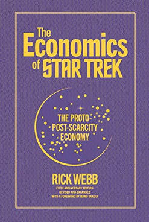

The Economics of Star Trek, by Webb
Monday November 9, 2020
I read the print version of the blog post, which delivers on the fun of thinking about a world with the economics of the Star Trek future. In the end you can't expect scifi to deliver economic salvation, but imaginative inspiration is a fine starting point for learning and thinking more.
I didn't really find Webb's guesses to constitute a workable system, though I can't really say whether the problem is his, Star Trek's, or the failure of my imagination.
There's also an even more serious book on this topic: Trekonomics, by Manu Saadia.

"If you don't believe that nothing is forever, if you don't believe that society and humans can change, then you do not believe in the future (and, incidentally, you do not believe in the past either)." (page 11, in Manu Saadia's Foreward)
"The one thing the show gets right is violence.
"I would point to a recent book by Stanford historian Walter Scheidel: The Great Leveler: Violence and The History of Inequality from the Stone Age to the Twenty First Century (Princeton University Press, 2017). Professor Scheidel's thesis is that throughout human history, only violence and war have truly managed to solve economic conflicts–and even more so when economic inequality got out of control, whether in pre-modern agrarian societies or during the turbulent and genocidal last century. Western Europe's prosperity rose out of the ashes and gas chambers of World War II. The war annihilated the old social hierarchies on the Continent, capitalists who happily collaborated with the Nazis were cast out of society and expropriated, thus removing the main opposition to expansive social safety net and to the modern welfare state. Former enemies began to cooperate and to coordinate, first economically and later politically. The European Union grew out of the War, it was a project borne out of the resistance to Nazism. The same is true of the post-war economic order (mostly, the Bretton-Woods accords shepherded by John Maynard Keynes) and of the United Nations. It is important to remember that all these were noble yet practical projects, conceived and imagined by idealists while the war was raging on and its outcome was still very much in the balance. If anything this proves that there is value in imagination and idealism, especially in times of great upheaval. One must always be ready." (pages 12-13, in Manu Saadia's Foreward)
This is a strange mix of dark and light...
(In Star Trek, many advances happened following The Eugenics Wars of the 1990s.)
Webb also opines on page 141 that "the sense lingers that if we are to arrive at a Trek vision of the future, we might have to go through our own version of The Eugenics Wars to get there."
"The Federation seems a bit like Williamsburg–a lot of artists who don't need to work." (page 41)
Interesting bit on page 90 about a UBI study showing it increased divorce rates (which people took as a bad thing, I think) but then later it turned out the divorce result was a statistical error.
John Kenneth Galbraith's The Affluent Society is referenced on pages 134-135 as a text whose "arguments can be said to underpin [the] Trek ideal."
Page 135 also references Fred Hirsch's Social Limits to Growth.
Page 141 references Inventing the Future: Postcapitalism and a World Without Work and the Mont Pelerin Society (though as "the Mount Perlan Society").